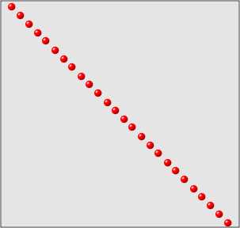
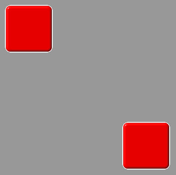
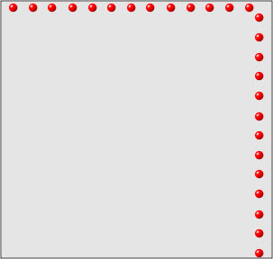
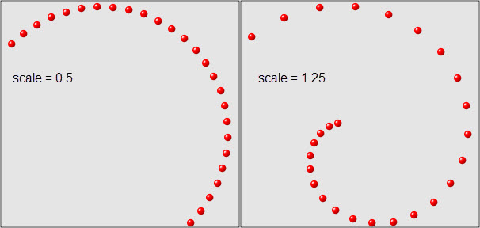
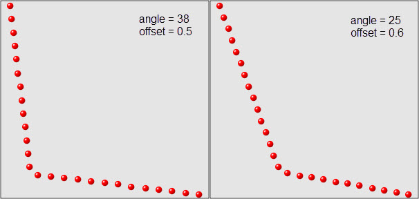
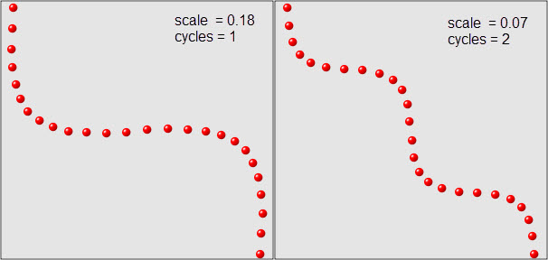
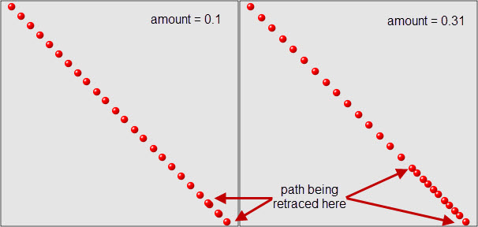

As previously described, a path object defines or computes all of the intermediate values of an animation between its begin and end values. The Facets animation system includes the following predefined path classes and objects:
| Class or object | Module |
|---|---|
| Path | facets.animation.path |
| LinearPath | facets.animation.path |
| Linear | facets.animation.path |
| LinearIntPath | facets.animation.linear_int_path |
| LinearInt | facets.animation.linear_int_path |
| Linear2DIntPath | facets.animation.linear_2d_int_path |
| Linear2DInt | facets.animation.linear_2d_int_path |
| Manhattan2DIntPath | facets.animation.manhattan_2d_int_path |
| Spiral2DIntPath | facets.animation.spiral_2d_int_path |
| Ricochet2DIntPath | facets.animation.ricochet_2d_int_path |
| Snake2DIntPath | facets.animation.snake_2d_int_path |
| Overshoot2DIntPath | facets.animation.overshoot_2d_int_path |
| BoundsPath | facets.animation.bounds_path |
| TextPath | facets.animation.text_path |
| Text | facets.animation.text_path |
Path is the base class from which all other path types derive. It is a concrete class that implements a simple linearly interpolated path between a start floating point value and an end floating point value. To emphasize this, LinearPath is provided as a synonym for Path. The same module also defines a Linear attribute which is a predefined and reusable instance of LinearPath.
The only facet defined by Path is:
The only public method defined by the class is:
The at method is the function that computes all of the intermediate values that form the path and so should always be overridden in any subclass. As with tweener classes, the value for the time t is always in the range from 0.0 to 1.0, with 0.0 representing the start of the animation, and 1.0 representing the end. The time range is indpendent of the actual length of time of any animation using the path because the animation system handles any necessary conversion between the normalized [ 0.0, 1.0 ] time range and the animation time.
The type of value passed for v0 and v1 and returned by the at method vary from one path class to the next, depending upon the type of data the path is intended to work with. The only requirement is that v0, v1 and the result all be of the same type. In the case of the base Path class, all of the values are expected to be floating point values.
LinearIntPath is similar to the base Path class but performs linear interpolation on integer, not floating point, values. The main difference is that LinearIntPath uses rounding instead of truncation in its calculations. The same module also defines a LinearInt attribute which contains a predefined and reusable instance of LinearIntPath for your convenience.
The Linear2DIntPath class performs linear interpolation on tuples with two integer values, which are commonly used to represent the position or size of 2D objects on a display. The same module also defines a Linear2DInt attribute containing a predefined and reusable instance of Linear2DIntPath.
For this class, and all of the 2D related path classes that follow, we illustrate the type of path each class creates using a plot showing various points along the computed path. For a Linear2DIntPath object, the plot is:
The plots are all screen shots captured from the Animation Lab demo in the Graphics and Animation section of the Facets UI demo using the setup shown below:
We also encourage you to try the demo to become more familiar with how paths work. Using the demo you can try all of the 2D related path classes as well as create your own custom 2D paths.
The Manhattan2DIntPath is another 2D integer tuple path. It computes its path like a car traveling the streets of Manhattan. That is, it first travels horizontally from its start point until it is vertically above or below its end point, and then travels vertically to reach its final destination, as illustrated in the following plot:
A Spiral2DIntPath is a 2D integer tuple path that follows a spiral path between its start and end points. The shape of the spiral path is controlled by a single facet:
A sample of the type of paths it can generate are shown in the following figure, which shows plots for two different values of scale:
A Ricochet2DIntPath is another 2D integer tuple path. In this case it is one that attempts to simulate an object ricocheting off of an imaginary obstacle. The two facets that control its behavior are:
Some sample plots showing the paths it can generate are shown below:
A Snake2DIntPath path is a 2D integer tuple path that tries to mimic sinuous (actually sinusoidal) movement between its start and end points. The following two facets control its behavior:
Some sample plots using different facet values are shown below:
The Overshoot2DIntPath path is a 2D integer tuple path that tries to simulate a moving object that overshoots its target and has to travel back along its original path to reach its final destination. It has a single control facet:
The following shows some sample plots created using different values for amount:
The BoundsPath class is a path that performs linear interpolation on a tuple of four integers, often used to represent the (x,y,dx,dy) bounds (i.e. position and size) of a Control object.
A TextPath class performs a simple string transform from its start string value to its end string value. The transform is performed by first deleting all of the characters in the start string, working from last to first, and once the start string has been deleted, adds the characters in the end string from first to last. The net effect is intended to simulate a user at a keyboard deleting their current text and then typing something new.